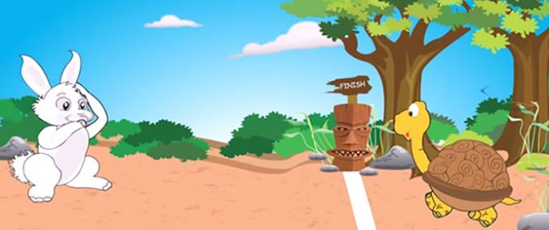

"En dag en hare gik og prallede om hvor hurtigt den kunne løbe. Han grinte af skildpadden for at være så langsom. Til harens store overraskelse udfordrede skildpadden haren til et race. Haren følte synes det var rigtig sjovt og accepterede skildpaddens udfordring. Ræven skulle være dommeren af racet. Lige i begyndingen af racet, løber haren langt forbi skildpadden, fuldstændig som alle forventede"
"Haren kom til halvvejs punktet og kunne ikke se skildpadden nogle steder. Haren var varm og træt og besluttede derfor at stoppe for en lille lur. Selv hvis skildpadden overhælede ham, vidste han at han stadig kunne vinde racet. Hele vejen gik skildpadden skridt for skridt, uanset hvor varm og træt han blev. Han blev bare ved og ved med at gå. Men, haren sov længere end han havde forventet og vågnede så op. Han kunne ikke se skildpadden nogle steder! Han sprinter så med fuld fart til ende punktet, men så så skildpadden sidde der og vente på ham."
Denne tekst er en oversat skriftlig version af folkloren om Haren og Skildpaden. Den er skrevet af Moralstories.
Læs historien hos MoralStories her